In this section, you will learn more about debugging ANTLR grammars in the workbench.
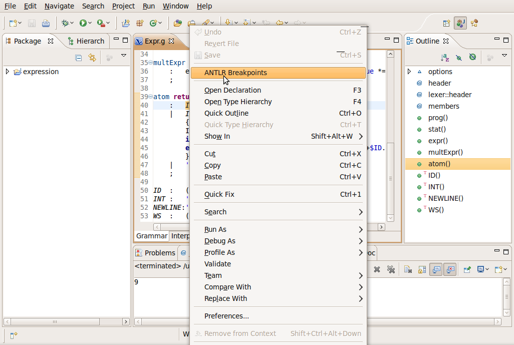
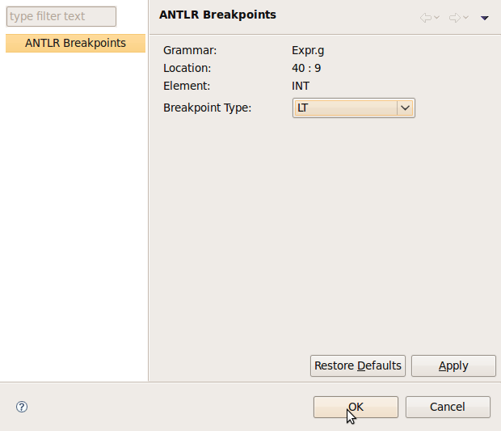
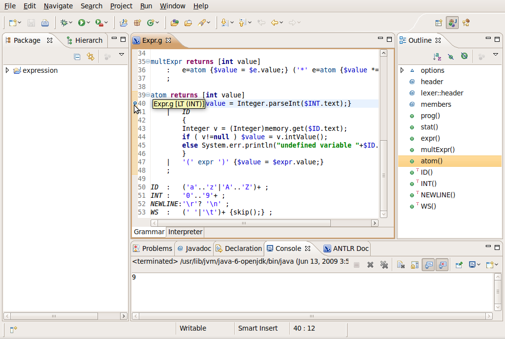
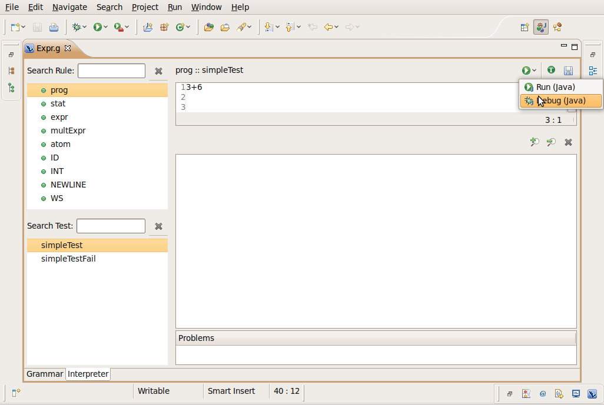
The "Run (Java)"/"Debug (Java)" button are available for saved test case
You can only run/debug combined/parser grammars
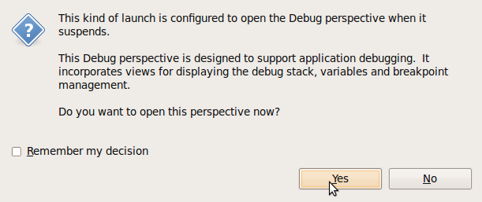
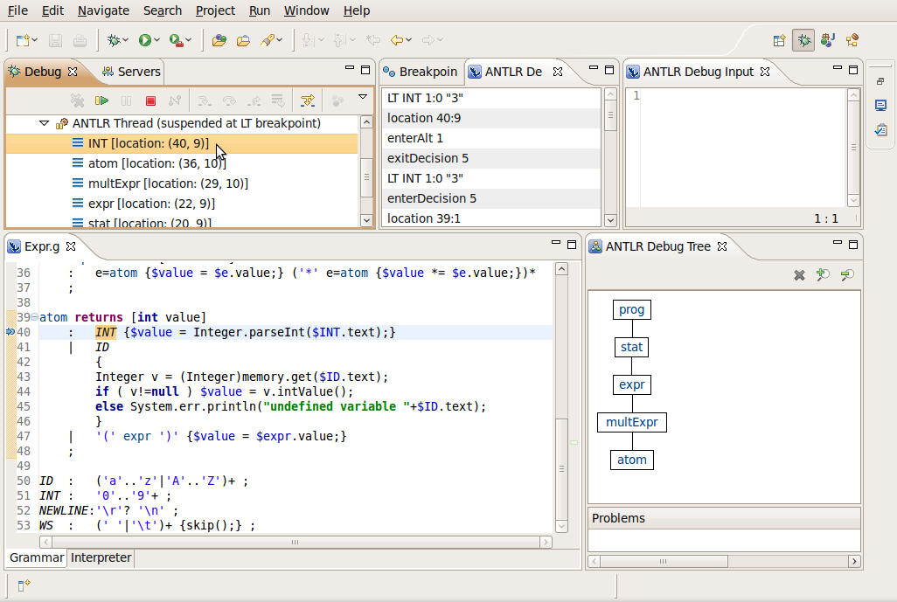
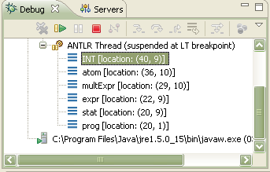
This view show the rule invocation stack to the current breakpoint. You can click on any element to follow the invocation path to the current breakpoint.
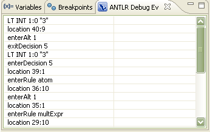
This view show the debug events generated by ANTLR. The first event (LT INT 1:0 "3") is the last event generated by ANTLR, here you can see the next token ("3") to be consumed by ANTLR.
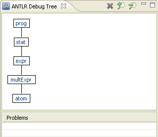
This view show a tree representation of the rules matched by ANTLR.
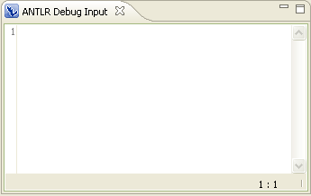
This view show the current input consumed by ANTLR. At this point there is any token consumed yet. Click on the resume button on the Debug view.
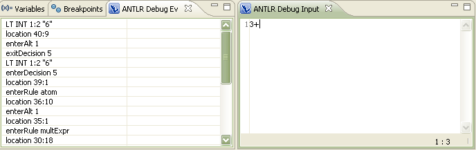
Now you can see the previous token "3" already consumed by ANTLR and in the ANTLR Debug Events view you can see the next token ("6") before be consumed by ANTLR.